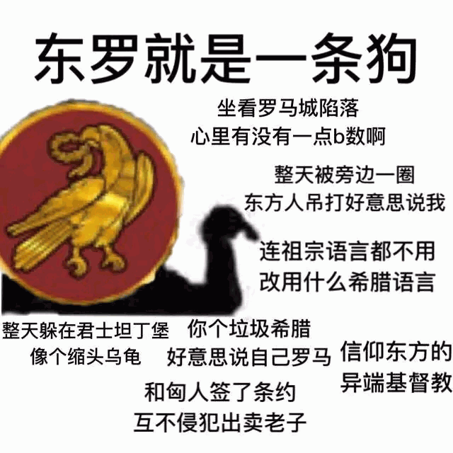
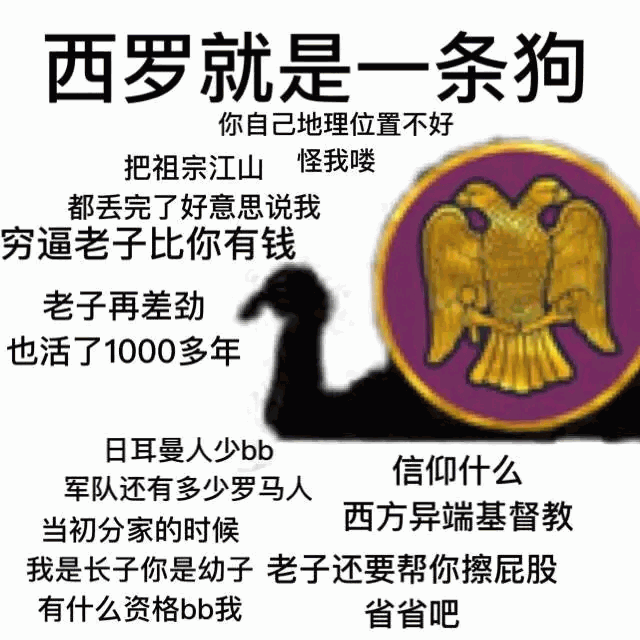

天时不如地利，地利不如人和。三里之城，七里之郭，环而攻之而不胜。夫环而攻之，必有得天时者矣；然而不胜者，是天时不如地利也。城非不高也，池非不深也，兵革非不坚利也，米粟非不多也；委而去之，是地利不如人和也。故曰：域民不以封疆之界，固国不以山溪之险，威天下不以兵革之利。得道者多助，失道者寡助。寡助之至，亲戚畔之；多助之至，天下顺之。以天下之所顺，攻亲戚之所畔，故君子有不战，战必胜矣。
虽然还有一些前因后果需要交代，但是不想再写「缘起」了，正好也到了直接涉及设定本身的话题，那么就统一放在「注释」当中吧。
首先是决定目标读者群，这东西写出来到底是给谁看的。如果不惦记着「冲出亚洲走向世界进行文化输出」，那么即便是「西幻」题材，也要本土化，瞄准汉语读者。而如果以「政治和意识形态斗争」为目标，更是要瞄准汉语读者。就是说，采用「翻译体」的效果会适得其反，再怎么邯郸学步东施效颦，也不如原版作品真正翻译过来的效果，于是没有「异域风情」的好处，只有「装哔」的麻烦。
更何况，为了「文以载道」，重要的是内容而不是形式。中国「发达的文学传统」的副作用就是「以辞害意」，比方说「中学语文课本」里面引用的亚圣孟老夫子的这段经典论述吧：
读起来琅琅上口，看上去似乎有些道理，但是仔细一推敲，发现找了两个「虚构」的「个例」当论据，那么结论当然站不住脚，虽然不是全无道理，但总觉得好像有哪里不对劲。可是这种「修辞」在我兲朝流行了少说两千多年，以毫无逻辑的过程得出似是而非的结果，忽悠得不学无术的钦定接班人们一愣一愣的。就是这种「传统」，导致了哪里一炮打响中国就冒出来「诡辩唯物主义」的结局。
所以，既然决定了重视内容胜过形式，那么就用「当代汉语」风格好了，读者们看起来还轻松点。并且，我似乎有一种莫名其妙的自信，即便口语化本土化也能写出欧味来。还有就是，在欧洲的中世纪，除了已经死掉的拉丁语之外没有「标准语」，各个民族语言内部都有无数方言存在，彼此沟通困难的情况普遍存在。所以，如果想要精确的表达「风土人情」，连「翻译体」都要仔细选择，以现存的汉语方言翻译欧洲各语种方言。
举例来说吧。法语普通话「法兰西岛变体」或曰「巴黎腔」是大革命之后强行推广的，推广力度之大和手段之激烈，比兲朝有过之而不不及。而德语到现在都没有「普通话」，学校教的那种来自马丁路德版圣经译本的「高地德语」（Hochdeutsch
）被民间讽刺为「高校德语」（Hochschuledeutsch
），只有留学生才说。
但是呢，因为有经典文本作为「共识」，至少官方对于「标准德语」的地位还是肯定的，如「瑞士德语」或曰「阿勒曼尼变体」与标准德语相差甚大，但是瑞士学校教的还是「标准德语」。不过凡事都有例外，法律上官方的规定和行政上官方的态度总有差别嘛。比方说同属「阿勒曼尼变体」的巴登符腾堡州，州政府就公开打广告：「除了标准德语之外我们无所不能」。如图：
开场白又写太多了，总之，想写欧洲「全貌」，法德轴心是绕不开的。尤其是中世纪题材，「天主教长女法兰西」和「德意志民族神圣罗马帝国」更是主要角色当中的主角。那么设定的时候多下点功夫，以当代汉语表达欧味会更有趣，比方说：「我有一句妈卖批不知当讲不当讲」「我也有一句娘希匹不知当讲不当讲」。
然后就是在上面的基础上作出简单的对应关系，不必细化到每个民族每个语种，毕竟绝大多数文字还是要用「现代汉语普通话」表达的。就是说，把本位面欧洲中世纪的「标准语」，也就是拉丁语，对应「现代汉语普通话」，用来表达一些正式场合的文本，包括但不限于公文和学术著作。
与此同时，就要考虑到「当代汉语」的地位，正好欧洲有拉丁语直系后裔意大利语存在。如果没有罗曼语族的其它语种，那么以「佛罗伦萨方言」为基础形成的「标准意大利语」可以当之无愧的自称「现代拉丁语」，意大利人学习拉丁语真就好比汉族人学习古汉语一样简单。
这里要提醒一下，拉丁语是罗马附近的拉丁部落的语言，位置在现在的拉齐奥大区；而佛罗伦萨所在的托斯卡纳大区，历史上是被拉丁部落干掉的伊特鲁里亚：

而伊特鲁里亚文明有独特和神秘之处，伊特鲁里亚语也迄今为止尚未破译，几乎唯一的文明遗产，就是演化成拉丁字母的伊特鲁里亚字母。在拉丁字母里面存在四个表达「科」音的字母：C、K、Q、X，这体现了伊特鲁里亚语的独特之处。有怀疑认为伊特鲁里亚人的口腔咽喉构造似乎与现代智人有些差别，《星际旅行》当中的「克林贡语」，设计者参考了伊特鲁里亚语设计音系，以表达一种「异星风情」。
所以，对于「奇幻」的平行位面，完全可以仿照经典「奇幻」作品当中那些与人类不同但又没有生殖隔离的种族设定。既然伊特鲁里亚面临哲学三大问（他们是谁？他们从哪儿来？他们到哪里去了？）当然可以根据剧情需要随便口胡，经典「奇幻」作品里面到处迁移的「精灵」「兽人」之类种族也不少嘛。
回到意大利，刚好佛罗伦萨方言的流行，是文艺复兴时期一票托斯卡纳学者和作家的努力成果，于是又可以和「当代汉语」在网络时代以来突飞猛进的演化挂钩。并且意大利也存在其它地位重要的方言，比如「我的太阳」歌词用的那不勒斯方言，于是可以与汉语官话方言区的其它变体对应，包括但不限于网民耳熟能详的「忽悠」「小样儿」之类。
上面这些乍一看繁琐的设定，并非无的放矢，还是为了「政治和意识形态斗争」这个纲领，还是为了「古为今用洋为中用」这个手段，我时刻紧绷这根弦。
因为法德意三国，就是来自罗马帝国灭亡之后的法兰克帝国，都可以上溯到「祖龙」查理曼，主要高层都算「日耳曼野蛮人」，明明「愚昧落后」但是却获得了来自代表「文明进步」的罗马主教的支持。这个事实，套用到兲朝，就是曲阜衍圣公搞的「蠕教」教义：「都都平丈我从虏」。于是，「武德充沛」「兲命昭昭」「费拉不堪」之类当代汉语流行短语，「狼牙棒里出政权」「以费拉包围城邦」之类现代汉语流行短语，又可以塞进去了也。
然后呢，就要刨根问底，还是哲学三大问：罗马是什么？从哪里来？到哪里去？
这个就不是什么宇宙奥秘或国家机密了也。
罗马也是「野蛮人」，以一头母狼养大的双胞胎为始祖，充分发扬了「武德充沛」的传统风俗习惯，于是「兲命昭昭」的建立帝国了也。这个罗马的性质，就是「一切依靠罗马人民，一切为了罗马人民」的军国主义。不熟悉西方历史的朋友可以用满清类比，八旗就是「罗马公民」，注意「罗马公民权」是政治权利，有了权利就可以自称「罗马人」，无论本来是什么人。
所以，只能说后来罗马继承了希腊文化，但是没有继承希腊的政治制度和社会结构。而拜占庭帝国即便把希腊语当作官方语言，从上到下都讲希腊语，拉丁语已经生疏了只用来写公文了，但是统治阶级仍然自称「罗马人」，而拜占庭语境当中的「希腊人」是贬义的粗话，类似「日耳曼野蛮人」这种。
那么「拜占庭帝国」又是什么呢？一种观点认为这个措辞是「德意志民族神圣罗马帝国」的拥趸发明出来贬低「东罗马帝国」的。这种观点有一定的道理，但是并不是无懈可击。因为众所周知「罗马」的官方名称是「元老院与罗马人民」，而拜占庭帝国的「元老院」变成「内阁」了，「元老」变成荣誉封号，而「人民」也都是「费拉不堪」的「希腊人」，除了「朝廷」里充斥「官僚」，在「宫廷」里还有「太监」……政治制度更像是「东方传统」的君主国，就是忘了改国号而已。
还有个佐证，就是拜占庭帝国的皇帝，自称「巴西琉斯」而不是「凯撒」或「奥古斯都」，可以认为是去拉丁化的标志。这个话题涉及到「罗马正统」，所谓「名不正则言不顺，言不顺则事不成，事不成则礼乐不兴，礼乐不兴则刑罚不中，刑罚不中则民无所措手足」的我中华兲朝上国传统「滑坡悖论」式修辞技巧。
如果捋清时间线，就能发现「真相」：
君士坦丁「大帝」建立「千年大计拜占庭新区」作为首都，将基督教合法化；希拉克略于620年宣布希腊语为国语，629年放弃罗马式「奥古斯都」称号，改称希腊式「虔信基督的国王」（Πιστὸς ἐν Χριστῷ Βασιλεὺς
）。到了九世纪拜占庭领导人因为是基督教世界里唯一的「皇帝」，只用「巴西琉斯」（Βασιλεὺς
）称号，已经与拉丁罗马做了事实切割。
因为「祖龙」查理曼被罗马主教加冕，所以拜占庭方面称其为「法兰克人的国王」，自称「罗马人的国王」，基督教世界有俩国王，这就是我中华兲朝上国南北朝互称「索虏」「岛夷」的典故。到了灭亡前夕，拜占庭领导人终于认清形势，开始自称「希腊人的国王」，而「罗马人的国王」就变成哈布斯堡了。
于是，哪怕从拜占庭视角观察，「日耳曼野蛮人」也是因为罗马主教加冕而被承认为国王，这就是有「东帝国」背书的「西帝国」法统。因为有罗马主教进行加冕这个确定正统的仪式，所以欧洲版「上洛」就是要进军奥古斯丁描述为的「天主之城」因而宗教地位比君士坦丁堡更高的罗马。而绿人只是占了君士坦丁堡「而已」，所以没有什么「闪米特民族神圣罗马帝国」。
腓特烈三世是最后一位在罗马被加冕的「罗马人的国王」，1452年加冕。而转过年来，1453年5月29日君士坦丁堡被攻陷，「东罗马帝国」灭亡，于是再也不用担心竞争对手了。于是腓特烈三世把脸一抹显出本相，改国号为「德意志民族神圣罗马帝国」，而马克西米利安一世开始自称「日耳曼尼亚的国王」，不仅与希腊人罗马人划清界限，同时也与后来因为拼写和发音变迁而变成「法兰西」的「法兰克人」划清界限。
也就是说，东边的「希腊民族神圣罗马帝国」和西边的「德意志民族神圣罗马帝国」相映成趣，五十步笑百步，屁股都不干净，谁也甭说谁。


看本篇的篇幅也差不多了，上面都在谈论内容和形式，那么就以「内容与形式的辩证的对立统一斗争」为结尾吧。作为写手的我，面临「钦定文豪」背后政治势力的「多方围堵两面夹攻」钦定「死路一条」，这种时候，要为其它写手指明一条摆脱「钦定文豪」干扰阻挠破坏的路。
众所周知，每一部网文，只要有些知名度，一定是有粉有黑，对于普通写手来说，没有赞助商，粉丝多半来自普通读者，对立面多半来自其它竞争对手，包括但不限于钦定文豪。而大热网文一旦开始获得赞助打广告，粉黑双方就都有水军洗地，在某些文学站点体现得更为突出。于是，从写手的角度看，闷头写出优秀作品是最好的还击。但是要注意到，没有赞助或站在「钦定文豪」对立面的普通写手，如果还坚持什么桃李不言下自成蹊，只会被淹没在来自钦定文豪雇用水军的造谣污蔑栽赃陷害当中，哪怕仆街了还会被泼一身脏水。若是写手和作品的水平达到了水军已经黑不动的程度，那么就会面临「钦定文豪」的抄袭借鉴，最终李鬼大火，而李逵只能「悲惨的死在小旅馆」。
所以嘛，才要透过现象看本质，要认识到钦定文豪背后是政治势力，因此在商言商在文言文都是治标不治本，只有勇敢的参与到政治斗争当中去，才能杀出一条血路来。而政治与文艺作品的关系，兲朝有无数钦定的最高指示，可供当护身符用。
最著名的就是来自大救星的两条：「利用写小说搞反党活动，是一大发明」「若是办一份报纸专门报道阴暗面，顶多半年就垮台」。这两条最高指示之间的破绽，可供利用。前者直接导致了当今核心之户口本爹被打倒，后者直接导致了「百花齐放百家争鸣」变成「万马齐喑究可哀」。
而需要注意的是，钦定文豪通常「人缘好情商高长袖善舞左右逢源」，因此傻呵呵的选了一边站队不仅不会带来安全保障，反而会成为钦定文豪的「垫脚石」或曰「一块抹布」。那么怎么办呢？好办，写手情商低但智商高就可以了也。
比方说，当前兲朝是红色江山，那么喷民国和刮民党就是政治正确，于是可以这样：
地主换成领主，乡贤换成骑士，贼秃牛鼻子气功大师换成神棍，南京换成梵蒂冈，上海换成罗马，莆田换成马耳他，中医药产业链换成医院骑士团，国民党换成教会，致公党换成黑手党，青帮换成克莫拉，电信诈骗团伙换成盗贼工会，渣滓洞换成宗教裁判所……
然后君士坦丁堡告急，但常凯申要「攘外必先安内」「抵抗土耳其顶多三天就亡国」，宋子文滥发赎罪券，孔祥熙倒卖假圣物，陈立夫扶持钦定吟游鬼才，陈果夫收买吟游诗人到处散布小道消息……当然，钦定文豪还是个自称「德意志太祖高皇帝兼匈牙利摄政」并且叫嚣「讨厌的人都要死」的逗哔精神病自大狂。
再然后多次组织「十字军」东征就是反攻大陆……
这么写一点政治风险都没有，还能符合主旋律传播正能量，弘扬中华传统文化，宣传社会主义核心价值观吖。
而如果刮民党翻盘了呢？更简单，把只要查找替换关键字，从喷「国民党反动派」摇身一变改喷「共匪」，立刻就成了忍辱负重曲线救国的民族脊梁。这一套翻脸如翻书的本事，「人缘好情商高长袖善舞左右逢源」的钦定党国栋梁接班人们，绝对比你这个「人缘差情商低只配面临多方围堵两面夹攻钦定死路一条」的写手，反应更快干得更好。于是，学会提前看风向就可以了也，再慢也慢不过头天新闻联播还高举紧跟「伟大光荣正确党の核心」第二天就拥护「自由民主进步党の总裁」的青年才俊嘛。